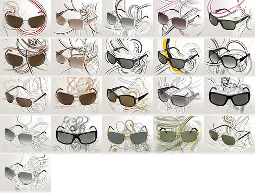
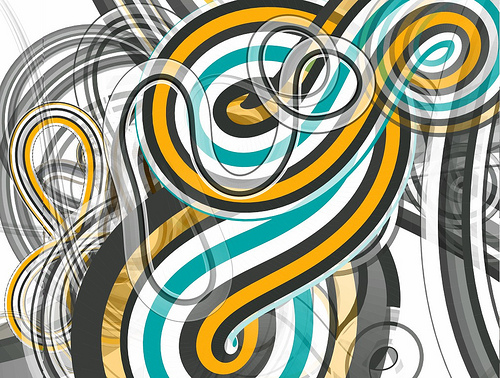

MBSys - new work for Montblanc
Fast Company Co.Design posted a feature yesterday about a recent project for Montblanc that I was involved in. The article focused on Onformative, showing several nice examples of their piece. But it also named me, somewhat awkward since I hadn’t published any documention and so there was no visual context.
To rectify the situation I’ve now posted some process documentation as well as some “director’s cut” renders that are far more complex than anything seen on the Montblanc site. The issue of readability between foreground (product) and background (animation) meant that most of the pieces used are somewhat tame in comparison.
The work was commissioned by Scholz & Volkmer. My piece was intended for the eyewear section of the site. Other artists included David Dessens, Anthony Mattox, Onformative and Vincent Rebers.
 - commercial
- marius watz
- montblanc
- onformative
- video
- web